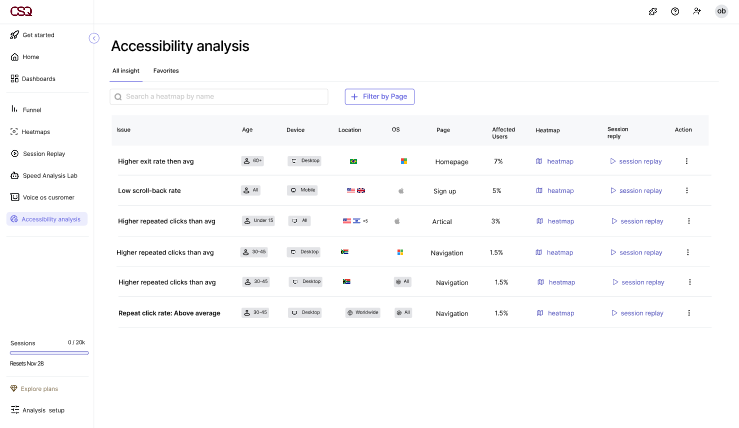
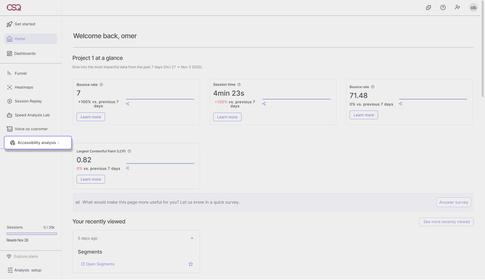
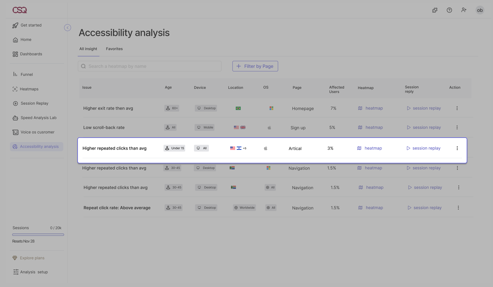
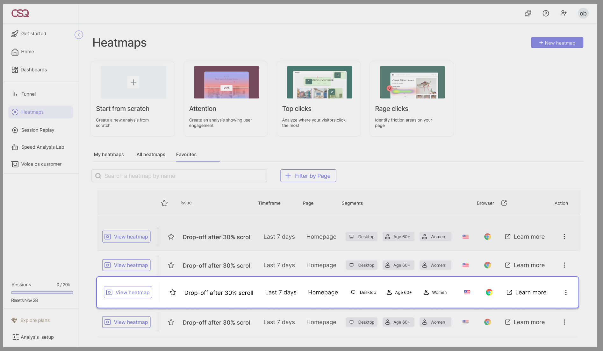
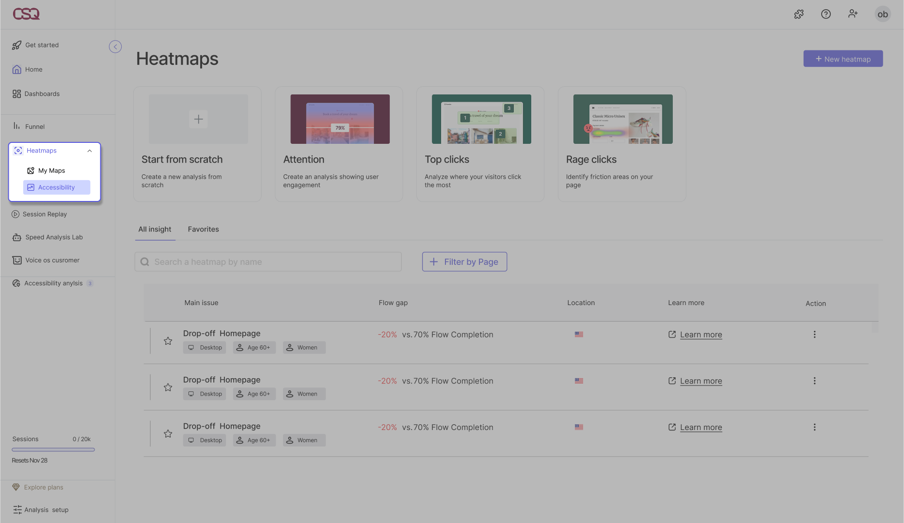
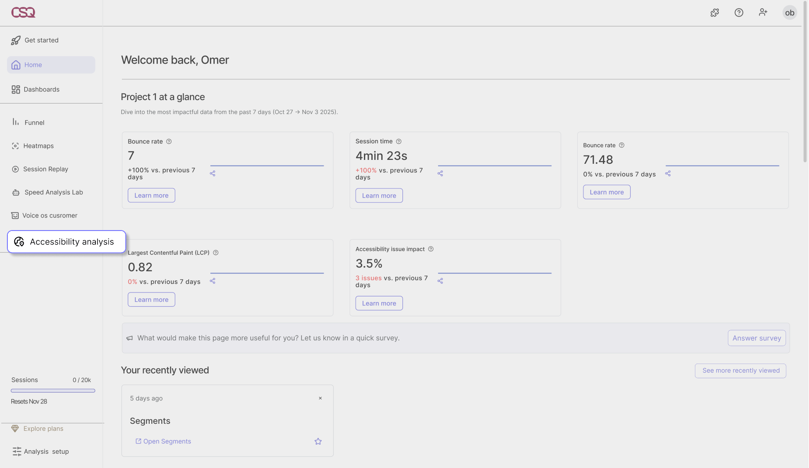

Turning accessibility challenges into actionable behavioral insights.
- Role
- UX research and UI design
- Team
- Team of 4 students
- Type
- Academic
- Year
- 2025–26
What is Hotjar
Hotjar is a behavioral analytics platform. Product teams use it to see how people use a website, through heatmaps, session recordings and feedback.
The problem
- Hotjar sees behavior, not who is left behind.It records how people use a site, but shows nothing about accessibility issues or their impact.
- The gaps don't look like bugs.When interfaces ignore differences in ability, culture or digital literacy, some groups get unequal access, and nobody goes looking for it.
Research
Findings
- 01The problem is cultural, not only technical. Gaps appear only when the data is split by age, device and location.
- 02Teams explore data mostly through tables. The feature had to speak the same language.
- 03A number alone doesn't drive action. An issue needs a clear name, the group it affects, and a link to the evidence.
Design rules
The solution
An Accessibility Analysis page that shows who struggles, where, and how much.

Accessibility analysis issues tableArchitecture
- Primary navigationA new Accessibility Analysis item, next to Heatmaps and Session Replay.
- Home dashboardAn Accessibility issue impact card that opens a panel with a chart, a guide to reading it, and links to issues.
- The issues tableEach row is one issue, with the affected group, the page and the share of users impacted. Issues can be saved to Favorites.
- Existing toolsEvery row links to a heatmap or session replay, already filtered to the affected group.
The flow
A product manager checks the site on Monday morning:
Step 01. Notice
On the home dashboard, the Accessibility issue impact card shows how many new issues.

Home dashboard with the impact cardStep 03. Investigate
She opens the heatmap, already filtered to users aged 60+, and sees where they get stuck.
Step 02. Understand
The table shows that users aged 60+ on desktop leave the homepage more than average, 7% of users.

Issues tableStep 04. Track
She saves the issue to Favorites to check whether the fix works.
 Issue saved to Favorites
Issue saved to FavoritesIterations
9 options explored across 2 decisions
01. How a table row explains an issue (5 options)
- Explored
- A minimal table, expandable rows, everything inline, demographic tags.
- Why not
- The issue wasn't understood, key details were hidden, visual overload, tags looked clickable.
- Final
- The issue first, then the affected group, in one readable row, with heatmap and replay links.
A rejected option

A rejected optionFinal
 Final
Final02. Where the feature lives (4 options)
- Explored
- A standalone tab with alerts, a tab inside the main dashboard, a layer inside Heatmaps.
- Why not
- Off Hotjar's language, unclear it was about accessibility, added complexity.
- Final
- A dedicated tab in the primary navigation, easy to find and close to existing tools.
A rejected option

A rejected optionFinal

FinalUser testing
We tested the prototype with a product manager from the industry (not from Hotjar), and with students and lecturers. Some participants found parts of the feature hard to understand, which showed us what to develop next.
Learnings
1. Accessibility is also cultural.Gaps between groups don't show up as bugs. You only see them when you split the data by population.
2. A new feature has to speak the product's language.Most of the options we rejected failed because they didn't feel like part of Hotjar.
3. Data needs explaining.In testing, not everyone found the data easy to read. Making the metrics clearer is the first thing to improve.